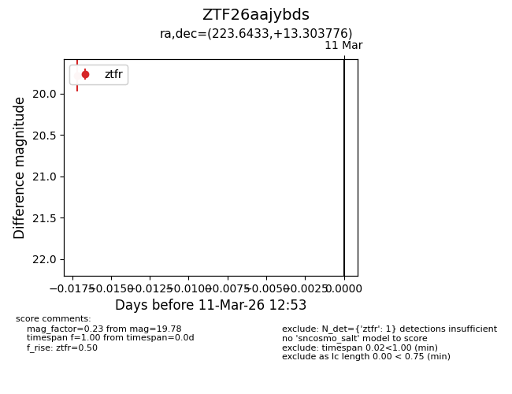
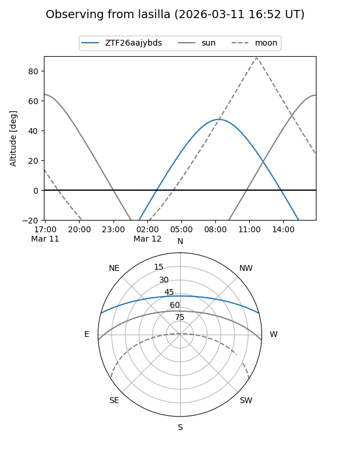
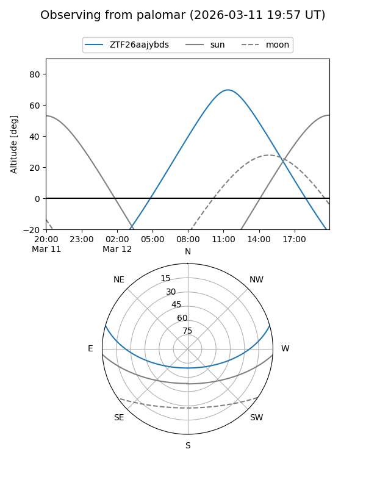
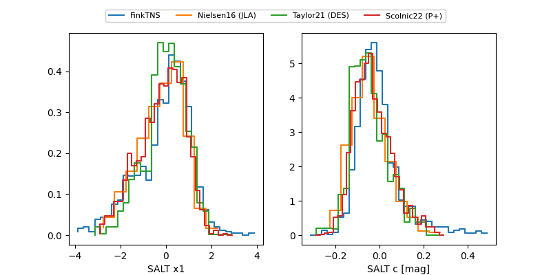

ZTF26aajybds
Target ZTF26aajybds at 2026-03-11 12:55
Aliases and brokers:
FINK: link
Lasair: link
ALeRCE: link
alt names
ZTF26aajybds (ztf,fink_ztf)
Coordinates:
equatorial (ra, dec) = 223.6433,+13.30378
equatorial (HMS+DMS) = 14:54:34.40,+13:18:13.59
galactic (l, b) = (13.4266,+58.10326)
Flags:
Photometry:
last ztfr=19.78
1 ztfr detections
Lightcurve

Visibility


Additional plots
